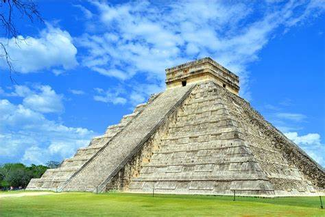
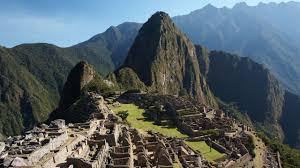
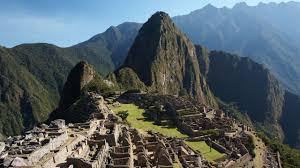

Las 7 maravillas del mundo moderno son monumentos
que fueron elegidos por una votación popular
organizada por una fundación suiza en 2007



 



Estas maravillas representan la diversidad cultural y arquitectónica
del mundo y tienen una gran importancia histórica y turística25. Además,
se hizo una mención honorífica a las Pirámides de Guiza, en Egipto, única maravilla
del mundo antiguo que todavía existe